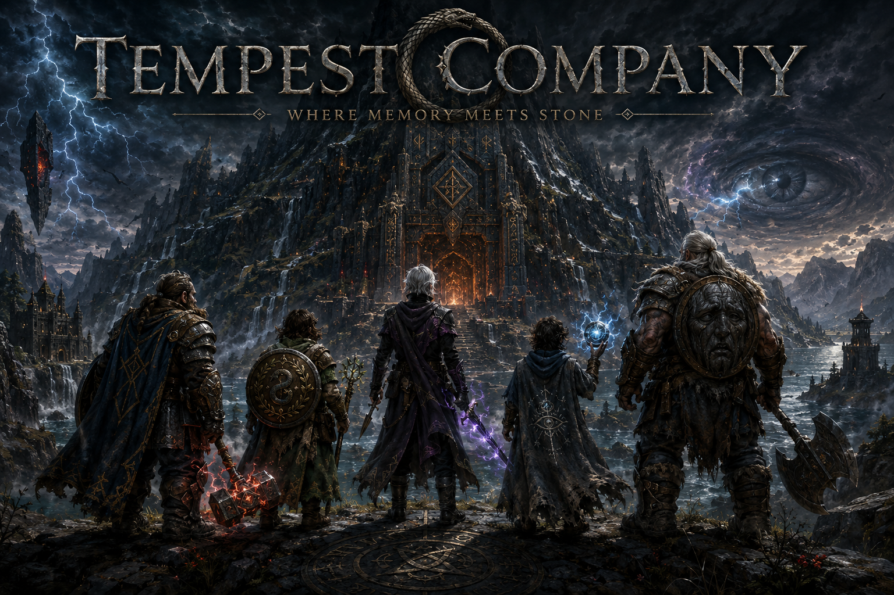

Living party roster for the Forge of Fury campaign. Portraits mark the company; full dossiers open only where discovery is complete.
Player Characters


Companion
With the company — not of the company roster.

Brennar Tallowick · Character record